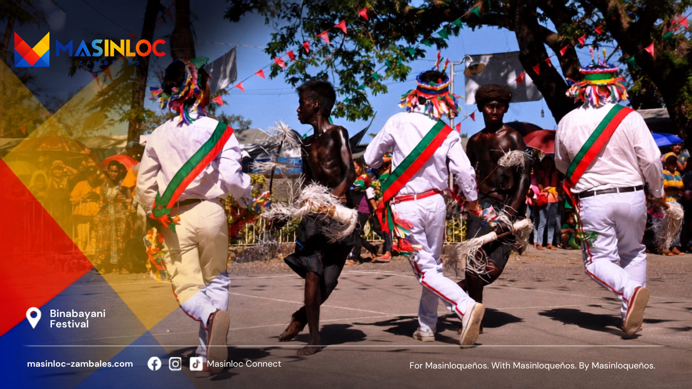

MABAYANI · Verified History
Masinloc was founded in 1607.
The academic history of the Augustinian Recollect mission states that Fray Andrés del Espíritu Santo reached Masinloc by sea with Fray Jerónimo de Cristo in 1607, founded the mission town, and built its first church. DILG Zambales likewise lists Masinloc among the province's earliest towns and gives 1607 as its year of establishment.
Spanish exploration in the wider Zambales story. Not the founding of Masinloc.
The documented founding year of Masinloc's mission town.
The sources reviewed establish the year 1607 but do not supply a verified month and day. The site therefore publishes the year only.
The founder in the record
Fray Andrés del Espíritu Santo
The surviving record identifies Fray Andrés del Espíritu Santo as the founder of Masinloc's mission town in 1607. His role is specific: he established the Recollect mission and its first church in a place where Sambal communities already lived.
Read the founder profilePortrait to be added from an approved historical source
The documented line
Eight moments that changed Masinloc
This is not every year in the town's history. It is the clearest sequence the sources reviewed can presently carry.
-
Before 1607
A community before the colonial record
Sambal and Aeta communities were already part of the Zambales landscape before the Recollect mission. The sources reviewed do not support inventing an earlier municipal founding date, but colonial documentation is not the beginning of local life.
-
1607
The documented founding of Masinloc
Fray Andrés del Espíritu Santo reached Masinloc with Fray Jerónimo de Cristo. The Recollect history names Andrés as founder of the mission town and builder of its first light-material church.
-
1649
Masinloc repelled six raiding vessels
A Recollect account reports that six caracoas carrying more than six hundred raiders from Jolo and Borneo landed on the Masinloc coast. Local Zambaleño defenders, led in the account by Fray Francisco de San José, forced the raiders toward Pulo San Salvador and captured the vessels and war material after a second action the next day.
-
1745
Work on the stone church began
A late nineteenth-century account traditionally dates the beginning of the present stone church to 1745. Its completion year remains unknown because the records for much of the construction period did not survive.
-
21 April 1871
Barrio San Vicente became independent Candelaria
San Vicente, the earlier name associated with Candelaria, separated from its mother town of Masinloc as an independent town. The parish remained tied to San Andres of Masinloc until a later royal order.
-
21 June 1892
Candelaria's parish separation was ordered
A royal order issued in Madrid declared Candelaria independent from the parish matrix of San Andres in Masinloc. The historical study notes that another separation decree followed in early 1893 for reasons that remain unclear.
-
31 July 2001
San Andres Church became a National Cultural Treasure
The National Museum declared San Andres Parish Church a National Cultural Treasure, recognizing the importance of the surviving church complex after centuries of building, damage, and repair.
-
30 November 2021
The parish became a diocesan shrine
The Diocese of Iba elevated the parish as the Diocesan Shrine of San Andres, adding a new chapter to the religious institution founded in 1607.
1649
The battle on the Masinloc coast
The most dramatic documented military episode in Masinloc's early colonial history happened in 1649, not in the often-repeated Binabayani origin year.
- 01
Six caracoas reached the Masinloc shore and more than six hundred raiders began to disembark.
- 02
Many residents moved toward the mountains while local defenders organized under Fray Francisco de San José.
- 03
The defenders repelled the first landing and the surviving raiders withdrew to Pulo San Salvador.
- 04
The next day, the defenders attacked the island position and captured the vessels and war material.
The study uses the colonial expression Moro pirates and identifies the raiders with Jolo and Borneo. On this site, that wording is reported as the source's description of seventeenth-century raiders, not as a label for Muslim communities today. The individual names of the Masinloc defenders have not yet been recovered.
Read the full MABAYANI web accountBeyond the usual timeline
Masinloc facts worth knowing
-
4
towns later grew out of Masinloc's mission matrix
The historical study traces Iba, Santa Cruz, Palauig, and Candelaria through earlier relationships with Masinloc's town or parish matrix. Their paths to independence were not identical.
-
Iba to Anda
was the mission reach once associated with Masinloc
Masinloc became a Recollect center for northern Zambales, then a much larger territory than the province known today.
-
1661
is the earliest baptismal entry cited in the surviving copied record
Older parish books were copied when their condition deteriorated, preserving names and a clerical sequence that might otherwise have disappeared.
-
1845
a former Masinloc parish priest became Archbishop of Manila
José Julián Aranguren served in Masinloc from 1836 to 1843 before his appointment to the metropolitan see of Manila.
From barrio to town
Barrio San Vicente became Candelaria
San Vicente was the older name recorded for what became Candelaria. Its history shows how far Masinloc's town and parish relationships once extended beyond the municipality's present boundaries.
- 21 April 1871
- Candelaria separated from Masinloc, its town matrix, and became an independent town.
- 21 June 1892
- A royal order issued in Madrid declared Candelaria's parish independent from the parish matrix of San Andres in Masinloc.
The historical study records another separation decree in early 1893 but says the reason for repeating it is unknown.

Living tradition
What Binabayani actually represents
Kristiyano and Aeta
The Department of Tourism recognizes Binabayani as Masinloc's conflict portrayal during the feast of San Andres. In Masinloc's own framing, the two represented sides are Kristiyano and Aeta. The Kristiyano side includes Christian Masinloqueños; Masinloqueños are not a separate third side.
Binabayani is a living tradition connected with the feast of San Andres. Its exact first performance and the frequently repeated 1621 origin have not been established by a located primary source.
Read the evidence and oral-history noteResearch basis
The record behind this page
The website copy is newly written from the verified research. It does not reproduce the MABAYANI book manuscript.
- Masinloc, Zambales: Augustinian Recollect Mission (1607–1902)Emmanuel Luis A. Romanillos
- History of Zambales and its earliest townsDepartment of the Interior and Local Government, Zambales
- Binabayani FestivalDepartment of Tourism
- 1891 Recollect account of the Masinloc churchVicente Pascual
- National Cultural Treasure declaration, San Andres Parish ChurchNational Museum of the Philippines
- Elevation of the parish as the Diocesan Shrine of San AndresCBCP News